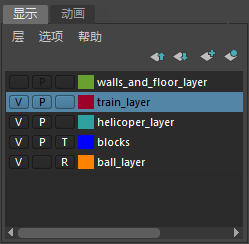

“层编辑器”(Layer Editor)包含许多选项卡，支持您显示两个不同的编辑器来处理不同类型的层。
在所有情况下，都有一个默认层，对象在创建后最初放置在该层。

如果在“首选项”(Preferences)窗口（选择，然后选择“UI 元素”(UI Elements)）中禁用“在通道盒内显示层编辑器”(Show Layer Editor within Channel Box)选项，则可独立显示“层编辑器”(Layer Editor)。
然后，单击状态行中的“层编辑器”(Layer Editor)图标将其打开。

注： 早期版本的“层编辑器”(Layer Editor)中提供的渲染层编辑器已替换为此新渲染设置系统。如果要使用传统渲染层系统，请打开“首选项”(Preferences)窗口中，选择“渲染”(Rendering)类别，然后选择“传统渲染层”(Legacy Render Layers)作为“首选渲染设置系统”(Preferred Render Setup system)。